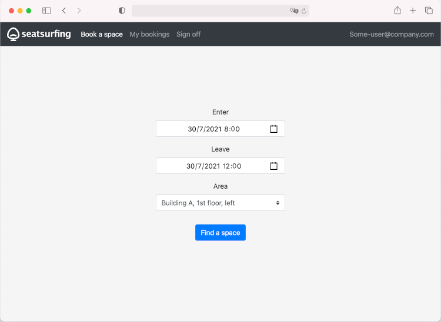

Web App
Seatsurfing features a mobile-ready Web Booking Interface. The web app is a Progressive Web App (PWA), which means it can be "installed" on your mobile device's home screen and includes caching mechanisms. You can access the web booking UI using a modern web browser at:
Your employees can use the web app to book their spaces independently and to manage their bookings, including the cancellation of their own existing bookings.
After logging in, the web booking UI should look like this:

From here, you can directly start to book a space.
Using the navigation bar at the top of the screen, you can view your upcomings bookings.
Logging in
To log in, you need to know your Seatsurfing instance's URL and must have a user account. For both, ask your organisation's Seatsurfing administrators.
Open the web app on your mobile device or computer. Afterwards, you can select one or more login methods.
If entering a password is required, you'll be asked to enter it.
Otherwise, you'll see one or more available authentication methods. Choose one of them. You'll be redirected to your organisation's authentication service. Due to technical reasons, you may need to enter your email address a second time. After logging in, you'll be redirected back to the Seatsurfing ap. Depending on your connection, this might take a few seconds.
Place a booking
To place a bookings, choose the desired period and area (i.e. floor).
You'll then see a floor plan showing the available (green) and unavailable (red) spaces. You can book a space by tapping it.
Your organisation might have configured additional restrictions, such as:
- Max. booking duration
- Max. number of upcoming bookings per person
- Max. days a booking can be placed in advance
If such a restriction applies, an according message will be shown.
Manage bookings
To manage your upcoming bookingsm tap "My bookings".
You'll see a list of your upcoming bookings in ascending order. To show details or to cancel a booking, tap it.
To keep things simple, it's not possible to modify an existing booking. Instead, you'll have to cancel and place a new booking.
Add to home screen
As a Progressive Web App (PWA), your users can "install" the booking web app. This means, they can add a shortcut to their home screen so they can subsequently access it with a single tap.
The process to install the Seatsurfing PWA differs between browsers. The MDM web docs provide a good overview on how to install a PWA in various browsers and operating systems.